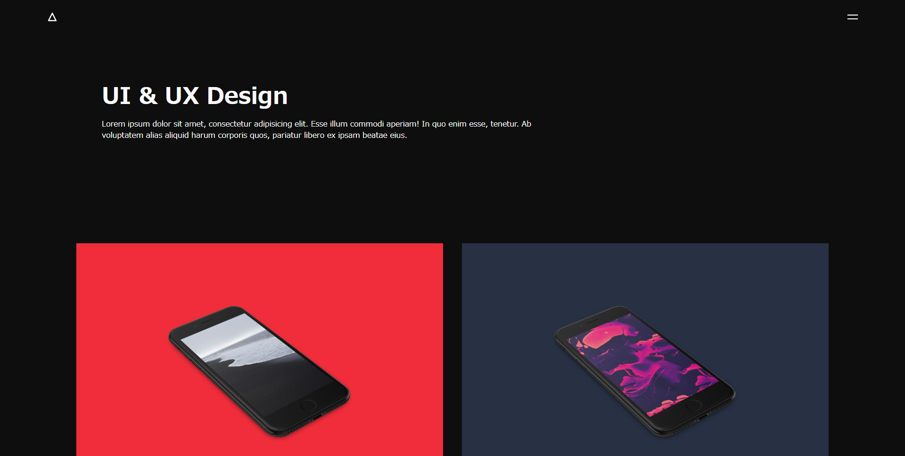
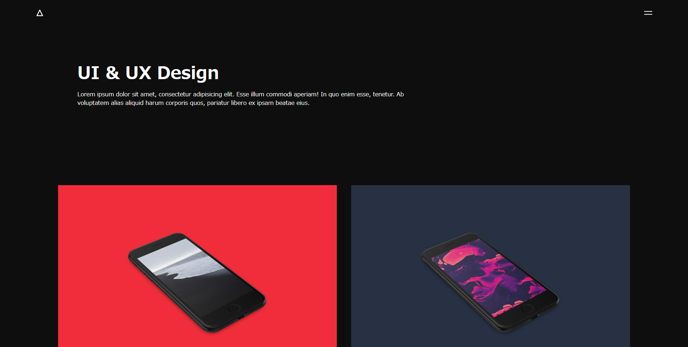

WebDesigns
ダークなオープニングテーマのSVGアニメーションを作りたいと思い、 魔法陣のSVGをCSSで描画し、別ページに遷移するオープニングを作成しました。 SVGとCSS/JSを組み合わせたアニメーションは最近のWEBアプリケーションでよくお見かけするので、 これからも積極的に取り入れます。
高級感が有り、スタイリッシュなギャラリーページをテーマに作成。 少ない枚数でインパクトを出すために、Hover.jsを使用し、 マウスホバー時にリッチなアニメーションを適用しました。 画像素材はTwitterからお借り致しました。
抽象的で独特の色合いのあるアート寄りのサイトをテーマに作成。 とあるサイトでテキストの色が途中で変化している物があり、 その仕組みも取り入れました。
背景にムービーを使用したコーポレートサイト風のページです。 システム会社を想定したテーマで、知性に溢れ且つ人の良さが出るような雰囲気を目指して 作成致しました。5Gの時代がくればこれから大幅に動画の埋め込みが流行っていきそうですね。
スライドショーで魅せるTOPページをテーマに作成。 テキストとイメージを2つ組み合わせたスライドショーになってます。 スライドが完了したイメージを拡大表示することで、 画像そのもののインパクトをより一層引き立たせています。
躍動感のある大空の写真に、テキストのアニメーションを付与したものです。 オープニング映像のようなものを作りたくてアニメーションを勉強し始めた頃のものです。 スクロール時、テキストのアニメーションは自作しています。
Parallaxの自学用に作った物です。 純粋なCSSだけでParallaxを再現しています。
参考にしていたデザイナーさんの講座を見ながら作成したものです。 シンプルなポートフォリオですが、魅せ方の１つとして引き出しに持っています。


 
